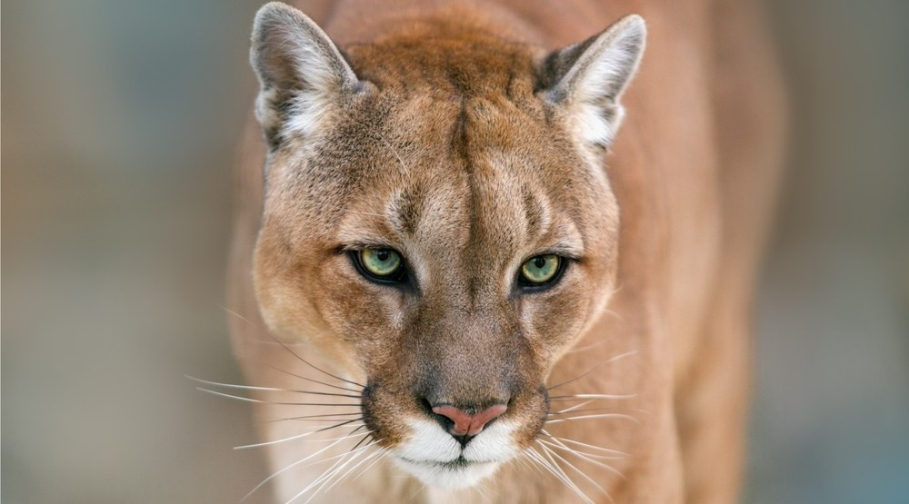

Estes Park native Laura Blake won the 27th Front Range Marathon over an elite field of the best long-distance runners in the country. Laura's time of 2 hr. 28 min. 21 sec. was only 2 minutes off the women's course record set last year by Sarah Rawlings. Kathy Lasker and Lisa Peterson finished second and third, respectively. Laura's victory came on the heels of her performance at the NCAA Track and Field Championships, in which she placed second running for Colorado State.

Laura Blake
In an exciting race, Peter Teagan of San Antonio, Texas, used a finishing kick to win the men's marathon for the second straight year, in a time of 2 hr. 12 min. 34 sec. Ahead for much of the race, Kyle Wills of Billings, Montana, finished second when he could not match Teagan's finishing pace. Jason Wu of Boulder, Colorado, placed third in a very competitive field.
This year's race through downtown Boulder boasted the largest field in the marathon's history, with over 9500 men and 6700 women competing. Race conditions were perfect with low humidity and temperatures that never exceeded 85 degrees.
Cougar sightings have increased 40% in the Este Park area according to a report released yesterday by the state DNR. In the last month alone, there were ten sightings in Estes Park and the surrounding communities of Grand Lake and Pinewood Springs. This compares to only twelve sightings for the entire spring of last year.
Reasons for the growing number of cougar sightings include increasing encroachment by people into former wildlife habitats and new wildlife regulations that result in decreasing numbers of elk and deer being taken by hunters. Cougars may be wandering into developed areas, following the herds.
DNR spokesman Steve Tasker asks residents to call the DNR report line at 555-6981 if they believe they have seen a cougar or any large predatory animal. Two fatalities have already occurred in the west this year from cougar attacks.
Highway 7 will reopen this Friday, June 3rd, after a final safety inspection. A late blizzard delayed road crews, marking this as one of the latest dates on record for the highway's reopening.
Rising to an elevation of over 12,000 feet, Highway 7 is a main link between Estes Park and Grand Lake. The reopening of the road is one of the annual signs that summer is near and the tourist season will soon be upon us!
Stop, stand tall, and don't run. A cougar's instinct is to chase.
Try to appear larger than the cougar by raising your arms.
Back away slowly, always keeping eye contact.
If the cougar displays aggressive behavior, shout and wave your arms. Convince the cougar that you are not prey, but a potential danger.
In case of an attack, stay on your feet and fight back aggressively.